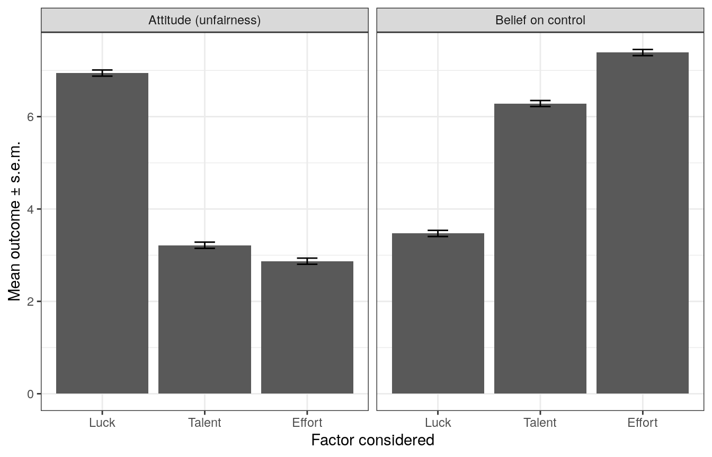
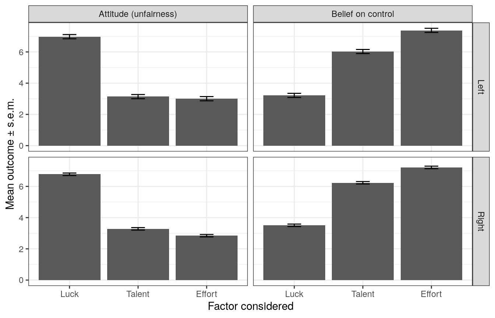

survey-results.Rmdlibrary(tidyverse)
#> ── Attaching packages ────────────────────────────────────────────────────────────────────────────────────────── tidyverse 1.3.0 ──
#> ✓ ggplot2 3.2.1 ✓ purrr 0.3.3
#> ✓ tibble 2.1.3 ✓ dplyr 0.8.4
#> ✓ tidyr 1.0.2 ✓ stringr 1.4.0
#> ✓ readr 1.3.1 ✓ forcats 0.4.0
#> ── Conflicts ───────────────────────────────────────────────────────────────────────────────────────────── tidyverse_conflicts() ──
#> x dplyr::filter() masks stats::filter()
#> x dplyr::lag() masks stats::lag()
library(stargazer)
#>
#> Please cite as:
#> Hlavac, Marek (2018). stargazer: Well-Formatted Regression and Summary Statistics Tables.
#> R package version 5.2.2. https://CRAN.R-project.org/package=stargazer
library(multiwayvcov)
library(here)
#> here() starts at /g4pool/eos/Documents/gits/mmtalent
library(multcomp)
#> Loading required package: mvtnorm
#> Loading required package: survival
#> Loading required package: TH.data
#> Loading required package: MASS
#>
#> Attaching package: 'MASS'
#> The following object is masked from 'package:dplyr':
#>
#> select
#>
#> Attaching package: 'TH.data'
#> The following object is masked from 'package:MASS':
#>
#> geyser
library(mmtalent)
df <- prepare_data(mmtalent_df, populationweights2016)To have the main result on attitudes and belief, we would like to have aggregate patterns before going into the individual level data.
attitude_dt <- df %>%
mutate(AL=luck_fair,
AT=talent_fair,
AE=effort_fair,
CL=luck_control,
CT=talent_control,
CE=effort_control) %>%
dplyr::select(AL, AT, AE, CL, CT, CE, treatment, left, wgt) %>%
gather(key = "outcome", value="value", AL, AT, AE, CL, CT, CE)Now for creating the first graph: unconditional on political position:
attitude_dt %>%
mutate(outcometype = factor( ifelse(outcome %in% c("AL","AT", "AE"),"Attitude (unfairness)", "Belief on control")),
f = fct_collapse(outcome,
Luck = c("AL","CL"),
Talent = c("AT","CT"),
Effort = c("AE", "CE")),
fo = fct_relevel(f, c("Luck", "Talent", "Effort"))) %>%
group_by(outcometype, fo, outcome) %>% summarize(m = weighted.mean(value, wgt), se = weighted.sd(value,wgt)/sqrt(n())) %>%
ggplot(aes(x=fo, y=m)) +
geom_bar(stat="identity") + facet_grid(.~ outcometype) +
geom_errorbar(aes(ymin=m-se, ymax=m+se), width=0.2) +
xlab("Factor considered") + ylab("Mean outcome \u00B1 s.e.m.") +
theme_bw()
Now, interacting with political position:
attitude_dt %>%
mutate(outcometype = factor( ifelse(outcome %in% c("AL","AT", "AE"),"Attitude (unfairness)", "Belief on control")),
f = fct_collapse(outcome,
Luck = c("AL","CL"),
Talent = c("AT","CT"),
Effort = c("AE", "CE")),
fo = fct_relevel(f, c("Luck", "Talent", "Effort")),
left_description = c("Right", "Left")[left+1]) %>%
group_by(outcometype, left_description, fo, outcome) %>% summarize(m = weighted.mean(value, wgt), se = weighted.sd(value,wgt)/sqrt(n())) %>%
ggplot(aes(x=fo, y=m)) +
geom_bar(stat="identity") + facet_grid(left_description ~ outcometype) +
geom_errorbar(aes(ymin=m-se, ymax=m+se), width=0.2) +
xlab("Factor considered") + ylab("Mean outcome \u00B1 s.e.m.") +
theme_bw()
We want to put attitudes on the left hand side and try to explain it by the type of attitude and the perception of control in the situation.
Now, we need to turn the data around a bit first:
subjectives_dt <- df %>%
mutate(AL=luck_fair,
AT=talent_fair,
AE=effort_fair,
CL=luck_control,
CT=talent_control,
CE=effort_control,
id = row_number()) %>%
dplyr::select(AL, AT, AE, CL, CT, CE, treatment, gender, age, left, high_income, income_category,
high_edu, edu_category, id, wgt) %>%
gather(key="key", value="y", AL, AT, AE, CL, CT, CE) %>%
mutate(key = factor(key),
fct = fct_collapse(key,
luck = c("AL","CL"),
talent = c("AT", "CT"),
effort = c("AE", "CE")),
outcome = fct_collapse(key,
attitude = c("AL", "AT", "AE"),
controlbelief = c("CL","CT","CE"))) %>%
dplyr::select(-key) %>%
spread( key = outcome, value=y) %>%
mutate(Luck = 1.*( fct=="luck"),
Effort = 1.*(fct=="effort"),
Talent = 1.*(fct=="talent"))
subjectives_dt %>% sample_n(3)
#> # A tibble: 3 x 16
#> treatment gender age left high_income income_category high_edu edu_category
#> <fct> <chr> <dbl> <lgl> <lgl> <chr> <lgl> <chr>
#> 1 Ex Post … female 46 FALSE TRUE 100k - 149 999 TRUE Bachelor
#> 2 Ex Post … female 38 FALSE FALSE 30k- 59 999 FALSE Associate's…
#> 3 Ex Ante … male 72 FALSE FALSE Less than 29 9… TRUE Bachelor
#> # … with 8 more variables: id <int>, wgt <dbl>, fct <fct>, attitude <dbl>,
#> # controlbelief <dbl>, Luck <dbl>, Effort <dbl>, Talent <dbl>Now, it should be possible to run the regression \[ A_{i,t} = \beta_0 + \beta_1 B_{i,t} + \beta_2 X_i + \phi_t + \epsilon_{i,t}, \] where \(i\) index the individual, and \(t\in\{ \mathrm{effort}, \mathrm{talent}, \mathrm{luck}\}\), \(A_{i,t}\in[0,10]\) is the fairness attitude, \(B_{i,t}\in[0,10]\) is the control belief, \(X_i\) is a set of individual controls, and \(\phi_t\) is a set of fixed effect for each factor.
AB1 <- lm( attitude ~ Talent + Effort, data=subjectives_dt, weights=wgt)
AB2 <- lm( attitude ~ Talent + Effort + controlbelief, data=subjectives_dt, weights=wgt)
AB3 <- lm( attitude ~ Talent + Effort + Talent*controlbelief + Effort*controlbelief + controlbelief,
data=subjectives_dt, weights=wgt)
AB4 <- lm( attitude ~ Talent + Effort + Talent*controlbelief + Effort*controlbelief + controlbelief +
age + left + high_income + high_edu + as.factor(gender), data=subjectives_dt, weights=wgt)
AB5 <- lm( attitude ~ Talent + Effort + controlbelief +
age + left + high_income + high_edu + as.factor(gender), data=subjectives_dt, weights=wgt)
stargazer( AB1, AB2, AB3, AB4, AB5,
se = list(sqrt(diag(cluster.vcov(AB1, cluster=subjectives_dt$id))),
sqrt(diag(cluster.vcov(AB2, cluster=subjectives_dt$id))),
sqrt(diag(cluster.vcov(AB3, cluster=subjectives_dt$id))),
sqrt(diag(cluster.vcov(AB4, cluster=subjectives_dt$id))),
sqrt(diag(cluster.vcov(AB5, cluster=subjectives_dt$id)))),
style="aer", type="text", keep.stat=c("rsq", "n"),
column.labels=c("All participants"),
out = here::here("tables","attitudes_controlbelief_regression.tex"),
column.separate=c(5))
#>
#> =======================================================================
#> attitude
#> All participants
#> (1) (2) (3) (4) (5)
#> -----------------------------------------------------------------------
#> Talent -3.728*** -3.375*** -3.370*** -3.478*** -3.394***
#> (0.106) (0.109) (0.206) (0.208) (0.109)
#>
#> Effort -4.074*** -3.582*** -3.270*** -3.459*** -3.608***
#> (0.111) (0.120) (0.225) (0.232) (0.121)
#>
#> controlbelief -0.125*** -0.104*** -0.115*** -0.119***
#> (0.019) (0.027) (0.028) (0.019)
#>
#> age -0.014*** -0.014***
#> (0.003) (0.003)
#>
#> left 0.125 0.122
#> (0.115) (0.115)
#>
#> high_income -0.148 -0.148
#> (0.108) (0.108)
#>
#> high_edu -0.179 -0.180
#> (0.110) (0.110)
#>
#> as.factor(gender)male 0.166* 0.169*
#> (0.100) (0.100)
#>
#> Talent:controlbelief -0.011 0.012
#> (0.035) (0.035)
#>
#> Effort:controlbelief -0.054 -0.022
#> (0.033) (0.035)
#>
#> Constant 6.944*** 7.379*** 7.304*** 8.001*** 8.021***
#> (0.074) (0.101) (0.120) (0.191) (0.164)
#>
#> Observations 6,003 6,003 6,003 6,003 6,003
#> R2 0.276 0.287 0.288 0.294 0.294
#> -----------------------------------------------------------------------
#> Notes: ***Significant at the 1 percent level.
#> **Significant at the 5 percent level.
#> *Significant at the 10 percent level.The survey came after the experiment. Are there any treatment effect on the survey outcomes? We test for joint significance of the treatment effects for each of the 6 outcomes.
A1 <- lm(luck_fair ~ treatment, data = df)
A1w <- glht(A1, linfct= c("`treatmentEx Ante Personal` = 0",
"`treatmentEx Post Personal` = 0",
"`treatmentEx Post Impersonal` = 0"))
A2 <- lm(talent_fair ~ treatment, data = df)
A2w <- glht(A2, linfct= c("`treatmentEx Ante Personal` = 0",
"`treatmentEx Post Personal` = 0",
"`treatmentEx Post Impersonal` = 0"))
A3 <- lm(effort_fair ~ treatment, data = df)
A3w <- glht(A3, linfct= c("`treatmentEx Ante Personal` = 0",
"`treatmentEx Post Personal` = 0",
"`treatmentEx Post Impersonal` = 0"))
B1 <- lm(luck_control ~ treatment, data = df)
B1w <- glht(B1, linfct= c("`treatmentEx Ante Personal` = 0",
"`treatmentEx Post Personal` = 0",
"`treatmentEx Post Impersonal` = 0"))
B2 <- lm(talent_control ~ treatment, data = df)
B2w <- glht(B2, linfct= c("`treatmentEx Ante Personal` = 0",
"`treatmentEx Post Personal` = 0",
"`treatmentEx Post Impersonal` = 0"))
B3 <- lm(effort_control ~ treatment, data = df)
B3w <- glht(B3, linfct= c("`treatmentEx Ante Personal` = 0",
"`treatmentEx Post Personal` = 0",
"`treatmentEx Post Impersonal` = 0"))
wrow <- c("Joint p-value on treatment:",
sprintf("%4.3f", summary(A1w)$test$pvalue[1]),
sprintf("%4.3f", summary(A2w)$test$pvalue[1]),
sprintf("%4.3f", summary(A3w)$test$pvalue[1]),
sprintf("%4.3f", summary(B1w)$test$pvalue[1]),
sprintf("%4.3f", summary(B2w)$test$pvalue[1]),
sprintf("%4.3f", summary(B3w)$test$pvalue[1]))
stargazer(A1, A2, A3, B1, B2, B3,
style="aer", type="text", add.lines=list(wrow),
keep.stat=c("n","rsq"))
#>
#> ========================================================================================================
#> luck_fair talent_fair effort_fair luck_control talent_control effort_control
#> (1) (2) (3) (4) (5) (6)
#> --------------------------------------------------------------------------------------------------------
#> treatmentEx Ante Personal 0.132 -0.076 -0.121 0.120 0.259 -0.110
#> (0.193) (0.192) (0.189) (0.190) (0.188) (0.195)
#>
#> treatmentEx Post Impersonal 0.127 -0.107 -0.177 -0.141 0.175 0.020
#> (0.193) (0.192) (0.189) (0.190) (0.188) (0.195)
#>
#> treatmentEx Post Personal 0.193 0.291 0.203 0.077 -0.083 -0.106
#> (0.193) (0.192) (0.188) (0.189) (0.187) (0.194)
#>
#> Constant 6.710*** 3.219*** 2.905*** 3.423*** 6.095*** 7.304***
#> (0.137) (0.136) (0.134) (0.135) (0.133) (0.138)
#>
#> Joint p-value on treatment: 0.834 0.961 0.858 0.862 0.374 0.896
#> Observations 2,001 2,001 2,001 2,001 2,001 2,001
#> R2 0.001 0.003 0.002 0.001 0.002 0.000
#> --------------------------------------------------------------------------------------------------------
#> Notes: ***Significant at the 1 percent level.
#> **Significant at the 5 percent level.
#> *Significant at the 10 percent level.We see that 3 out of 18 treatment effects are significant at the 10% level, which is not surprising even under the null of no true effect.